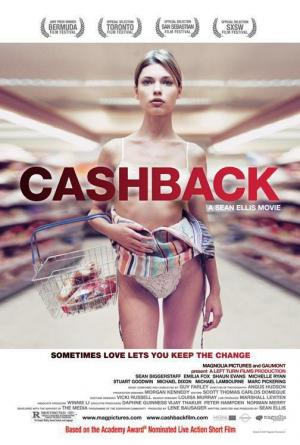

Mi opinión sobre Cashback
Director: Sean Ellis
Género: Drama, Romance
Puntuación: ⭐ 8/10
Cashback es una película visualmente impresionante que explora la percepción del tiempo y el arte de la observación...
Director: Sean Ellis
Género: Drama, Romance
Puntuación: ⭐ 8/10
Cashback es una película visualmente impresionante que explora la percepción del tiempo y el arte de la observación...